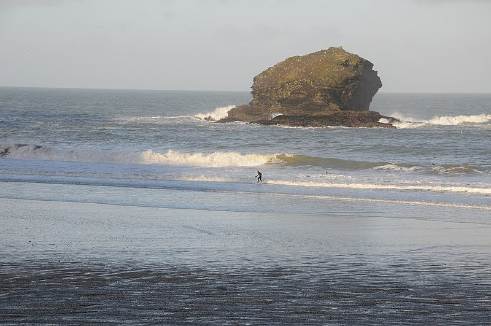
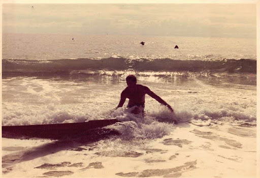

O surf é um esporte aquático que envolve deslizar sobre as ondas do mar em uma prancha. Originado nas culturas polinésias, ganhou popularidade mundial nas décadas de 1960 e 1970. Além de ser uma atividade física, o surf promove uma conexão profunda com a natureza e o oceano. Existem diversas modalidades, como o longboard e o shortboard, cada uma com suas características. O surf também é conhecido por sua cultura vibrante,
que inclui música, arte e um estilo de vida descontraído.

- Exercício Físico: O surf é uma atividade que
proporciona um ótimo treino cardiovascular,
além de fortalecer músculos e melhorar a resistência.
- Conexão com a Natureza: Surfar permite que você esteja em contato direto com o mar e
a natureza, promovendo uma sensação de paz e bem-estar.
- Redução do Estresse: A prática do surf pode ajudar a aliviar o estresse e a ansiedade,
proporcionando momentos de relaxamento e diversão.
O surf
oferece uma variedade de benefícios, tanto físicos quanto mentais. Fisicamente, é um excelente exercício que melhora a força, a resistência e a flexibilidade, além de trabalhar diversos grupos musculares, especialmente os braços, pernas e core. Mentalmente, o surf pode ser uma forma eficaz de aliviar o estresse e a ansiedade, proporcionando uma sensação de liberdade e conexão com a natureza. A prática regular também pode aumentar a concentração e a disciplina. Além disso, o surf promove um senso de comunidade, permitindo que os praticantes se conectem
com outras pessoas que compartilham a mesma paixão.

O surf é um esporte que atrai praticantes e turistas de todo o mundo, e existem diversos locais icônicos que são considerados paraísos para os surfistas. Aqui estão alguns dos principais lugares de surf ao redor do globo:
- Pipeline (Oahu): Conhecida como a meca do surf, a praia de Pipeline é famosa por suas ondas tubulares e desafiadoras. É um local obrigatório para surfistas experientes e sede de competições internacionais.
- Waimea Bay (Oahu): Outra praia famosa que abriga ondas gigantes durante o inverno, atraindo os melhores surfistas do mundo.
- Snapper Rocks: Este local é famoso por suas ondas consistentes e longas. É o ponto de partida da série mundial de competições de surf, o World Surf League (WSL).
- Burleigh Heads: Conhecida por suas ondas de qualidade e ambiente descontraído, Burleigh é um destino popular tanto para surfistas quanto para turistas.
- Uluwatu: Famosa por suas ondas perfeitas e vistas deslumbrantes, Uluwatu é um hotspot para surfistas de todos os níveis. As ondas podem ser desafiadoras, especialmente durante a estação de ondas grandes.
- Kuta Beach: Ideal para iniciantes, Kuta oferece ondas mais suaves e uma atmosfera vibrante.
Fontes das imagens